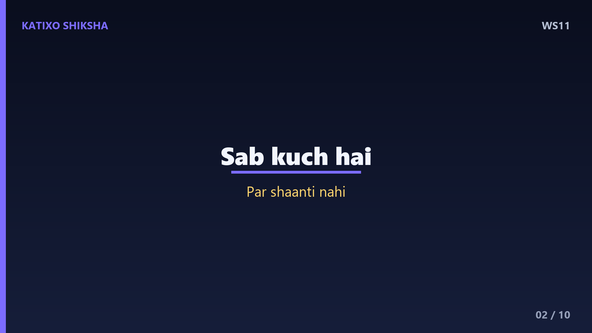
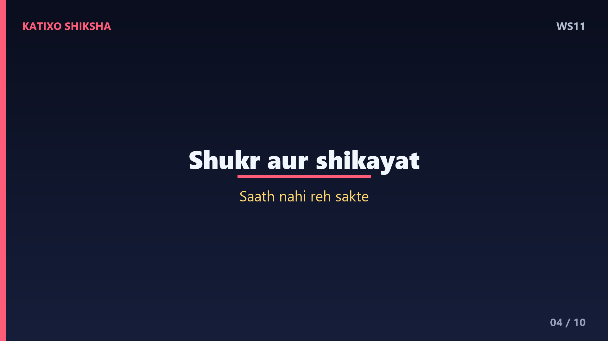
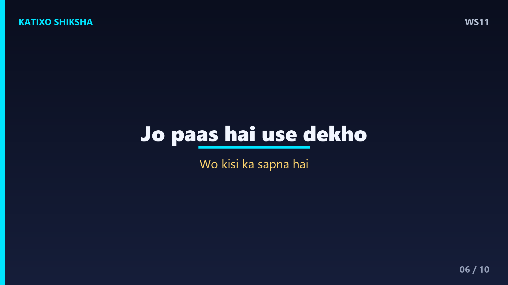
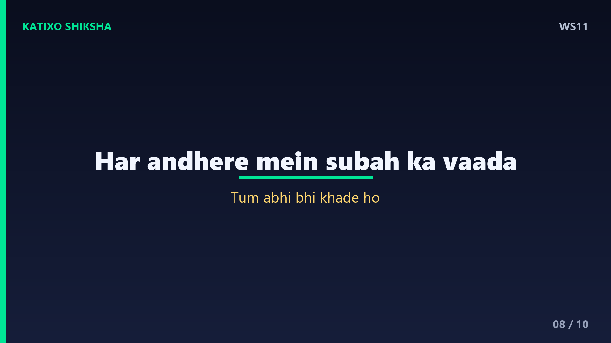
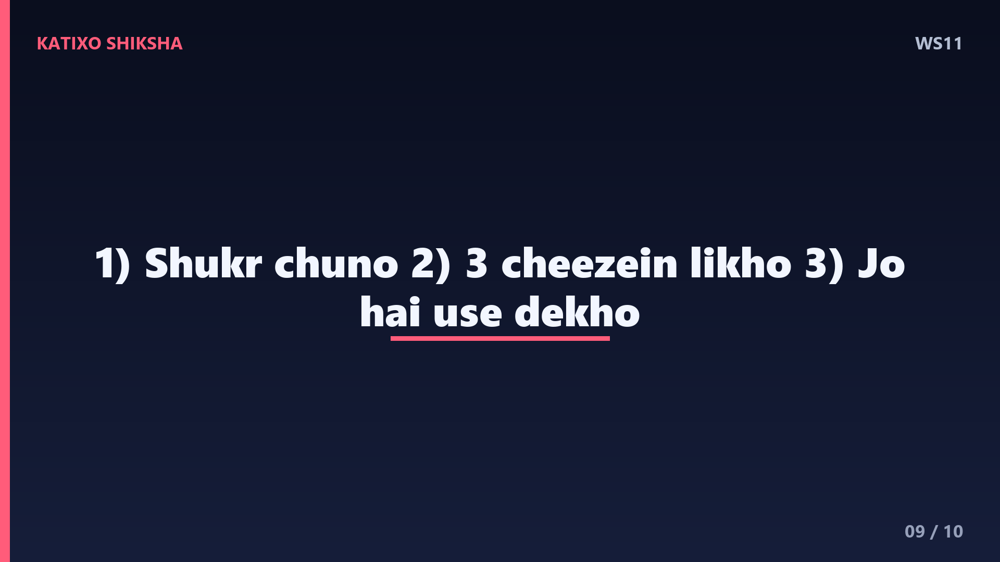

WS11 — Gratitude Yaani Kritagyata Ki Shakti?
Slide 1दोस्तों, एक सवाल — तुम्हारे पास जो है, क्या तुम उसकी कद्र करते हो, या हमेशा उसके पीछे भागते हो जो तुम्हारे पास नहीं है? हम में से ज़्यादातर लोग कमी की भावना में जीते हैं — और कुछ, और ज़्यादा। पर सच ये है कि खुशी पाने में नहीं, महसूस करने में है। आज Katixo KhojLab में हम एक छोटी कहानी से समझेंगे gratitude यानी कृतज्ञता की असली शक्ति, और इसे रोज़ की ज़िंदगी में कैसे लाएँ। चलो शुरू करते हैं।

Slide 2एक अमीर आदमी था, जिसके पास बड़ा घर, गाड़ी और पैसा सब कुछ था, फिर भी वो हमेशा परेशान रहता था। एक दिन वो एक संत के पास गया और बोला — महाराज, मेरे पास सब कुछ है, पर शांति नहीं। संत मुस्कुराए और बोले — कल सुबह मेरे साथ चलना, मैं तुम्हें एक चीज़ दिखाऊँगा। अगली सुबह वो दोनों एक छोटी सी झोपड़ी के पास पहुँचे, जहाँ एक गरीब परिवार रहता था।
Slide 3उस झोपड़ी में रोटी कम थी, पर हँसी बहुत। बच्चे खेल रहे थे, माँ गा रही थी, पिता थककर भी मुस्कुरा रहा था। अमीर आदमी हैरान रह गया। संत बोले — देखो, इनके पास तुमसे बहुत कम है, फिर भी ये ज़्यादा खुश हैं। फ़र्क चीज़ों में नहीं, नज़र में है। ये लोग जो पास है उसका शुक्र मनाते हैं, और तुम जो नहीं है उसका दुख। यही पूरा राज़ है।

Slide 4Lesson नंबर एक — हमारा दिमाग एक ही समय में या तो शुक्र महसूस कर सकता है, या शिकायत। दोनों एक साथ नहीं रह सकते। जब तुम gratitude में होते हो, तब डर, जलन और लालच अपने आप कमज़ोर पड़ जाते हैं। Science इसे कहती है — gratitude दिमाग में dopamine और serotonin बढ़ाता है, यानी वही chemicals जो हमें खुश और शांत महसूस कराते हैं। शुक्र मनाना सिर्फ़ अच्छी आदत नहीं, असल में दिमाग की दवा है।
Slide 5अब एक practical technique — इसे कहते हैं gratitude journal. रोज़ रात सोने से पहले तीन चीज़ें लिखो जिनके लिए तुम आज शुक्रगुज़ार हो। बड़ी हों या छोटी, कोई फ़र्क नहीं — एक गरम चाय, किसी की मुस्कान, या बस एक साँस जो आराम से चली। Research कहती है कि जो लोग रोज़ ये करते हैं, वो ज़्यादा खुश और कम stressed रहते हैं। ये एक छोटी सी आदत तुम्हारी पूरी सोच की दिशा बदल देती है।

Slide 6Technique नंबर दो — कमी की जगह भरपूरी पर ध्यान दो. हम अक्सर सोचते हैं — काश और होता। इसकी जगह सोचो — मेरे पास पहले से कितना कुछ है। तुम्हारी आँखें देख सकती हैं, तुम्हारे पैर चल सकते हैं, तुम्हारे पास खाने को रोटी और सोने को छत है। दुनिया में लाखों लोग इन्हीं चीज़ों के लिए तरसते हैं। जो तुम्हारे पास है, वो किसी और का सपना है। ये सोच ही तुम्हें अमीर बना देती है।
Slide 7Technique नंबर तीन — दूसरों का शुक्रिया अदा करो. जिस इंसान ने तुम्हारी ज़िंदगी में अच्छाई की है — माँ, पिता, दोस्त, या कोई teacher — आज उन्हें बताओ कि तुम उनके shukrguzaar हो। एक छोटा सा thank you किसी का पूरा दिन बना सकता है, और तुम्हारे रिश्ते को गहरा कर सकता है। Gratitude सिर्फ़ अंदर महसूस करने की चीज़ नहीं, बाँटने की चीज़ है। जितना बाँटोगे, उतना बढ़ेगा।

Slide 8अमीर आदमी ने पूछा — महाराज, पर जब ज़िंदगी में बुरा वक़्त आए, तब किस बात का शुक्र करूँ? संत बोले — बेटा, मुश्किल वक़्त भी कुछ सिखाता है। हर तकलीफ़ में एक सबक छिपा होता है, हर अँधेरे में एक सुबह का वादा। शुक्र इस बात का करो कि तुम अभी भी खड़े हो, साँस ले रहे हो, और सीख रहे हो। जो इंसान बुरे वक़्त में भी शुक्र ढूँढ ले, उसे कोई तूफ़ान नहीं तोड़ सकता।

Slide 9चलो आज की तीन सबसे बड़ी सीख याद कर लें। पहली — दिमाग एक साथ शुक्र और शिकायत नहीं कर सकता, इसलिए रोज़ शुक्र चुनो। दूसरी — रात को तीन चीज़ें लिखो जिनके लिए तुम grateful हो। और तीसरी — जो तुम्हारे पास है उसे देखो, उसे नहीं जो नहीं है, और अपनों का शुक्रिया कहना मत भूलो। ये तीन छोटी आदतें तुम्हारी ज़िंदगी में असली खुशी ले आएँगी।
Slide 10याद रखना दोस्तों — खुशी इस बात में नहीं कि तुम्हारे पास कितना है, बल्कि इस बात में है कि तुम जो है उसे कितना महसूस करते हो। Gratitude वो जादू है जो साधारण चीज़ों को भी कीमती बना देता है। आज ही, सोने से पहले, तीन चीज़ों का शुक्र करके देखो। तुम्हारी नींद और सुबह दोनों बदल जाएँगी। अगर ये कहानी अच्छी लगी हो तो Like, share, aur Katixo KhojLab ko subscribe karna mat bhoolna. Milte hain agli kahani mein!